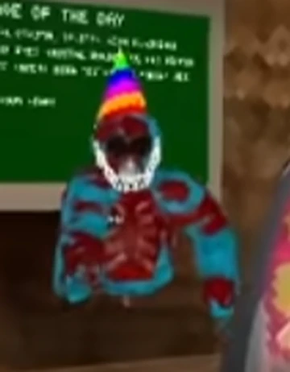

Overview
Blood Jman is a hostile entity encountered in Gorilla Tag. It is feared for its disturbing appearance, abnormal speed, and ability to disrupt players’ sessions.
Appearance
Blood Jman takes the form of a crimson gorilla with glowing red eyes. Its body is covered in blood-like textures that drip unnaturally.
Behavior & Abilities
- Appears in private lobbies with specific codes.
- Moves unnaturally fast and unpredictably.
- Can freeze or forcibly disconnect players.
- Often stares silently before pursuing targets.
Origin & Codes
Blood Jman is commonly linked to lobby codes such as
BLOOD, JMAN, and 666.
Joining these lobbies is said to increase the chance of encountering it.
Sightings
Many encounters have been documented online, with recordings capturing sudden attacks and strange lobby behavior.
Gallery
Frequently Asked Questions
How can Blood Jman be encountered?
Players report encounters when entering lobbies with codes such as BLOOD, JMAN, or 666.
Is Blood Jman dangerous?
Yes. Players have reported being chased, frozen, and even disconnected from servers when it appears.
What time does it appear most?
Most reports occur between 7PM and 3AM local time, often during late-night gameplay sessions.
Does it make sounds?
Yes. Witnesses describe distorted static, deep growls, or eerie laughter shortly before it appears.
How can I survive an encounter?
The safest action is to immediately leave the lobby. Remaining too long risks being targeted or disconnected.
Can it be defeated?
No methods are confirmed. Avoidance and quick disconnection are the only defenses.